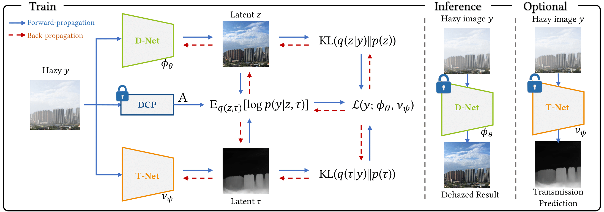

|
Hello World! and welcome to my website. I am an incoming Ph.D. student in Computer Science at the School of Computing and Augmented Intelligence, Arizona State University. Currently, I work on video understanding and multi-modality problems. Prior to ASU, I obtained my M.S. in Artificial Intelligence (2023) and B.S. in Mathematics (2021) from Hanyang University in the Republic of Korea üá∞üá∑. I was fortunate to have supervision of Prof. Tae Hyun Kim on computational imaging tasks and Prof. Jae Hong Seo in the areas of machine learning applications and cryptology. For any inquires, please feel free to reach me via email. Email / GitHub / Google Scholar / LinkedIn / CV |

|
|
* denotes equal contribution. |
|
Harnessing Meta-Learning for Improving Full-Frame Video Stabilization
Muhammad Kashif Ali, Eun Woo Im, Dongjin Kim, Tae Hyun Kim CVPR 2024 / paper |
|
|  |
Deep Variational Bayesian Modeling of Haze Degradation Process
Eun Woo Im*, Junsung Shin*, Sungyong Baik, Tae Hyun Kim CIKM 2023 / paper / code |
|
© 2024 Eun Woo Im. Powered by Jekyll. Last update: Apr. 30 2024 |